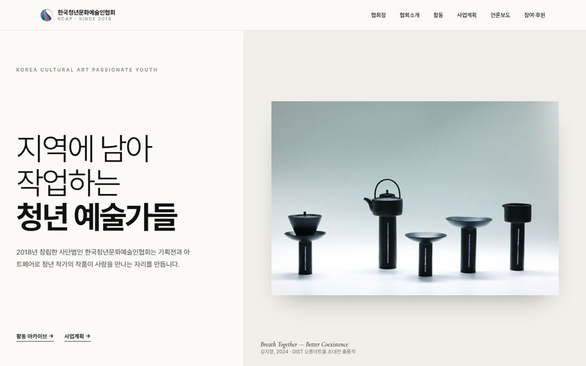
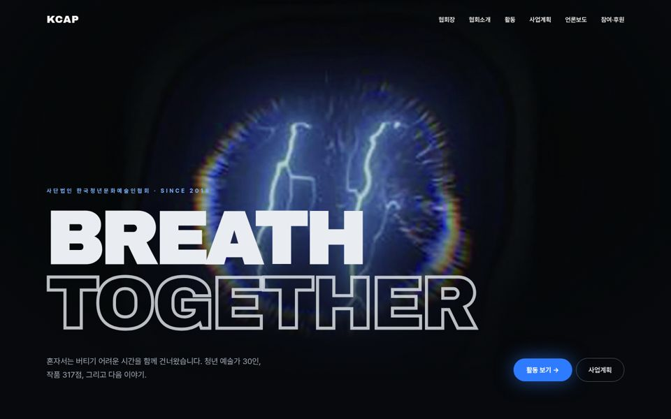
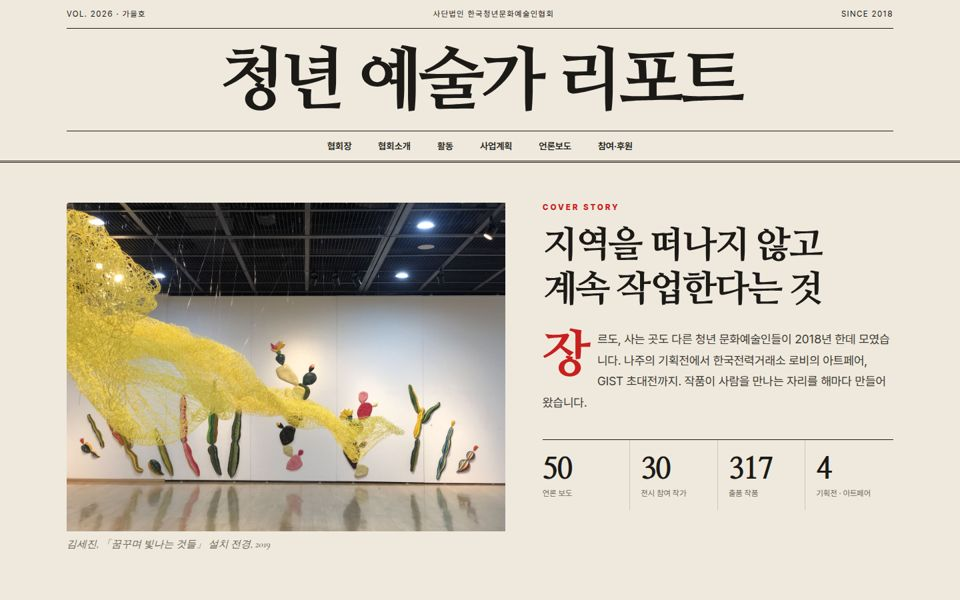
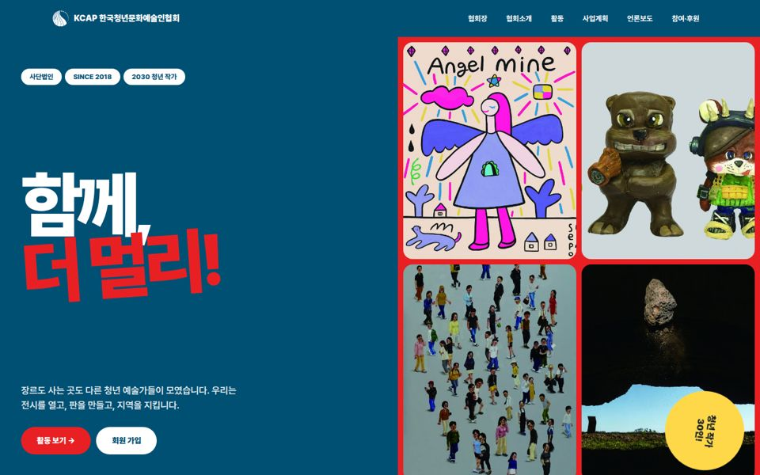
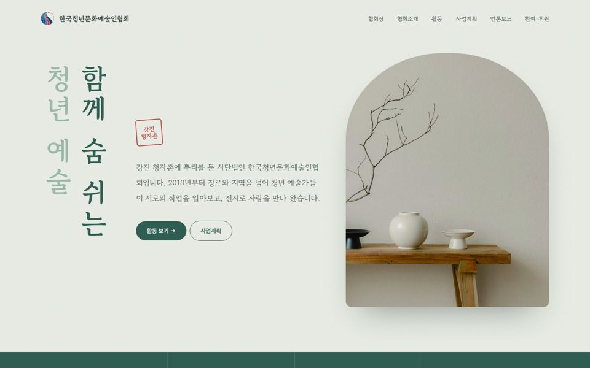

카드를 누르면 실제 홈페이지 시안이 열립니다. 모든 시안은 같은 내용(활동·협회장·사업계획·언론보도)을 담고 있고, 고른 안의 스타일로 전체 페이지를 맞춥니다.

여백과 얇은 글자, 작품 한 점을 크게. 국공립미술관 같은 절제된 신뢰감.

검은 화면에 미디어아트가 떠오르는 영화 같은 첫인상. 김세진 회장 작품 톤과 연결.

잡지 표지처럼. 명조 헤드라인과 칸 나눔으로 '기록이 쌓인 단체' 느낌.

협회 CI 블루·레드를 크게. 젊고 활기찬 청년 단체 이미지.

강진 청자촌 정체성. 청자색과 한지 질감, 세로쓰기로 지역색과 품격.